Since its establishment on May 18, 1970, Universiti Kebangsaan Malaysia (UKM) has not only fulfilled the vision of its founding fathers to accord Bahasa Melayu as the language of learning and scholarship but has also successfully produced intellectuals and scholars who are among the nation’s pride.
Starting out with only three faculties, it has since grown into 13 faculties, 2 educational center, 13 research institutes of excellence and two commercial entities, UKM Holdings Sdn. Bhd. and UKM Technology Sdn. Bhd. It has thus grown not just in size, but also stature, becoming a research institute in various fields of study including operating various research centres.
Aware of the changes taking place in the academic landscape, UKM is taking steps to address them. One is through e-Learning to prepare students through innovative teaching and forward–looking curriculum to meet demands of the new economic needs. It nurtures research to provide solutions to pressing problems while also engaging with the community and industry, to strive for sustainable development both at the national and international levels.
Bachelor Faculty in Universiti Kebangsaan Malaysia
"Ungraduate Programme"
Applied Chemistry
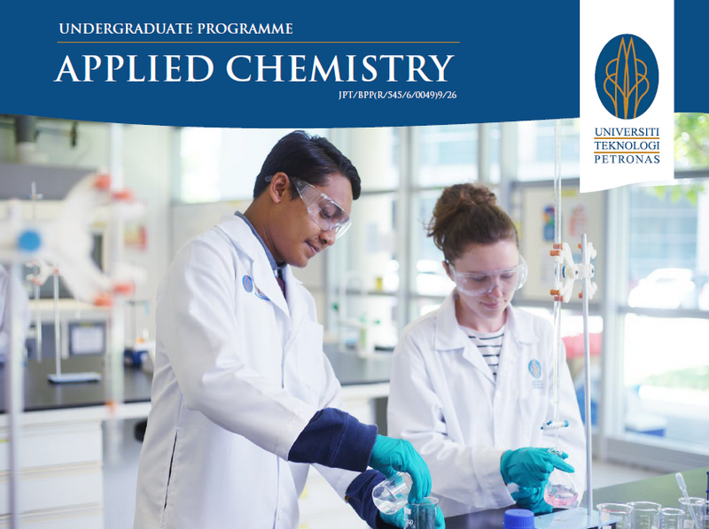
Applied chemistry focuses on applying chemical principles to solve industrial problems while ensuring sustainable development. This includes creating biodegradable plastics, treating toxic waste, and promoting green industrial processes.
Bussiness Management
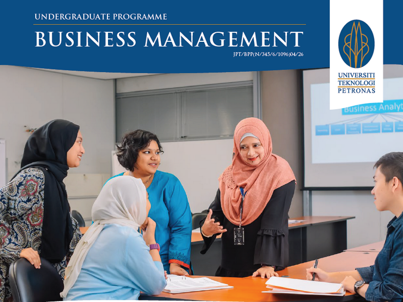
Business management involves planning, leading, organizing, and controlling resources to enhance business efficiency, sustainability, and adaptability. It plays a vital role in driving innovation and ensuring business success.
Computer Engineering
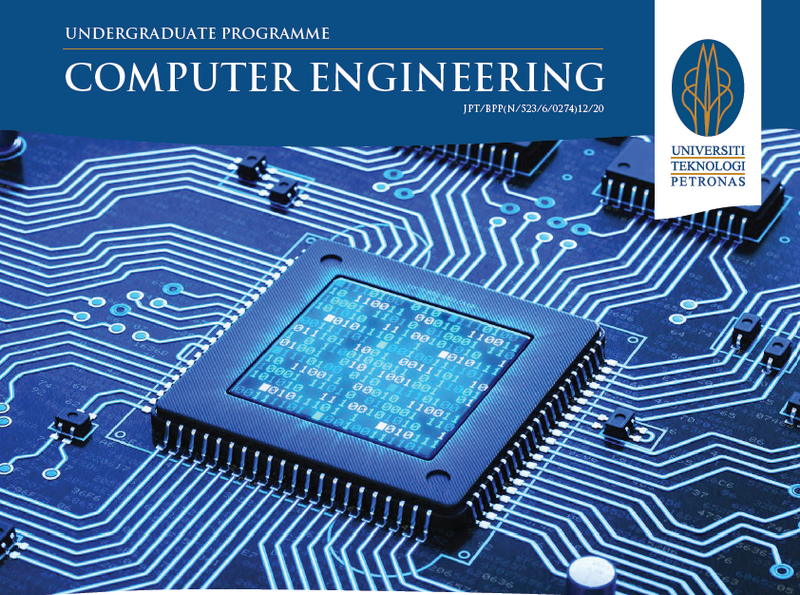
Computer engineering focuses on designing, building, and programming computer-based systems, from mobile devices to high-end computers. It combines expertise in electronics engineering and computer science, enabling seamless hardware and software integration.
Chemical Engineering
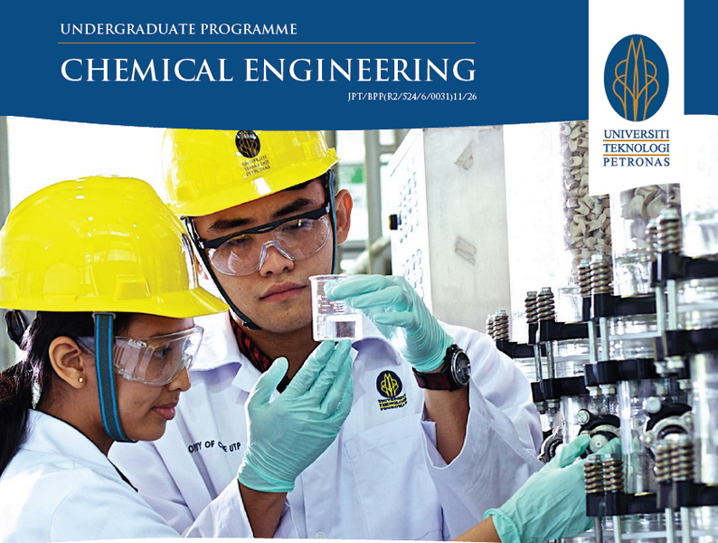
Chemical engineering focuses on transforming raw materials into useful products like fuel, plastics, and fertilizers while improving industrial processes. It addresses industry challenges through resource assessment, cost analysis, and sustainability, preparing engineers with essential skills for the future.
Computer Science
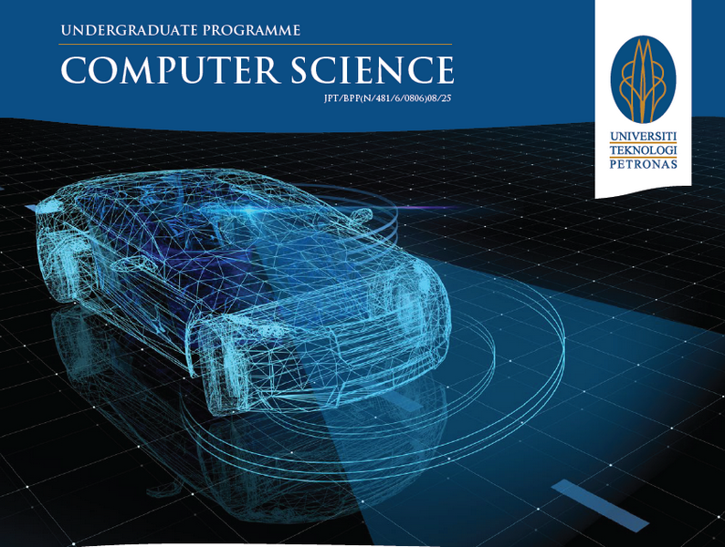
Computer science spans computing theory and practice. The practical side is about designing and building software and developing effective ways to solve computing problems, while the theoretical side is about devising new and better ways of using computers and addressing computing challenges.
Civil Engineering
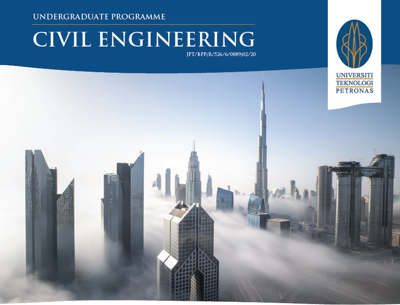
Civil engineering focuses on the design, construction, and maintenance of buildings and infrastructure in the built environment. It encompasses roads, bridges, dams, and urban developments, while prioritizing sustainability and improving quality of life.
Electrical Engineering
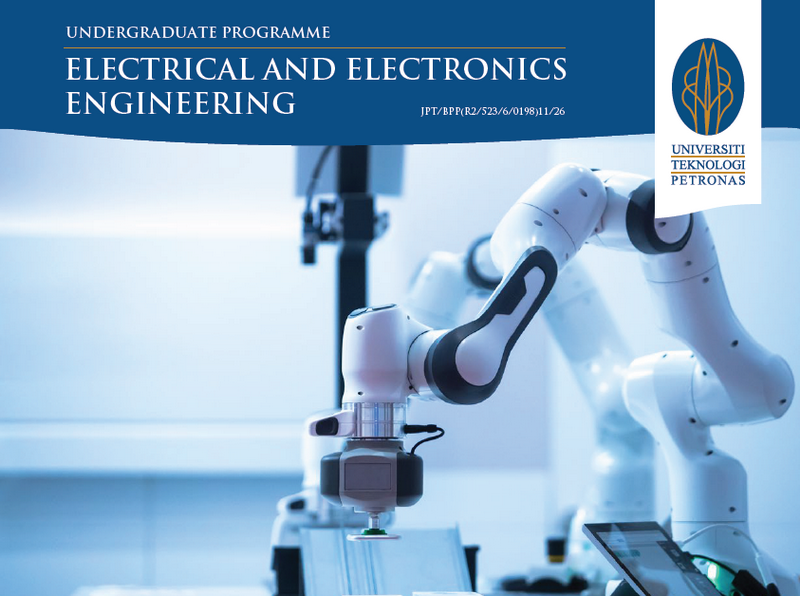
Electrical and electronics engineering covers power generation, distribution, and the use of electronic systems for communication and control. It spans large-scale facilities like power stations to microelectronic devices like sensors and microcontrollers, playing a vital role across industries such as manufacturing, IT, and transportation.
Information System
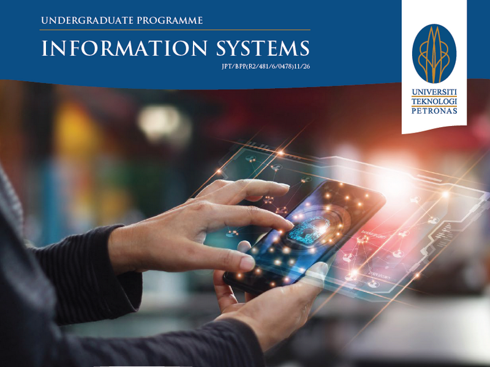
Information systems is all about effectively managing the appropriate software to support an organisation’s decision making and communications. This is achieved by the use of relevant information systems concepts and tools. It is vital in a business environment, providing solutions and services to various industries while solving many business challenges globally.
Information Technology
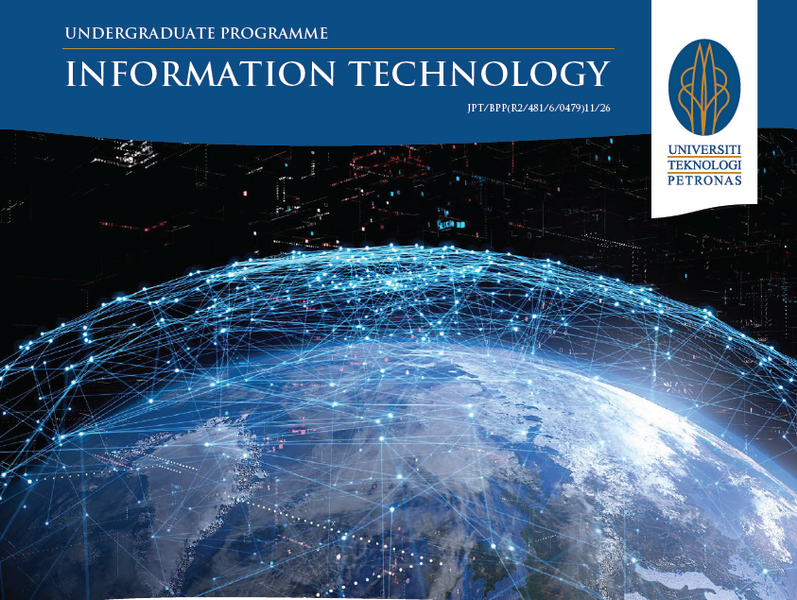
Information technology is all about selecting, developing, applying, integrating, and administering secure computing technologies to enable users to accomplish their personal, organisational and societal goals.
Materials Engineering
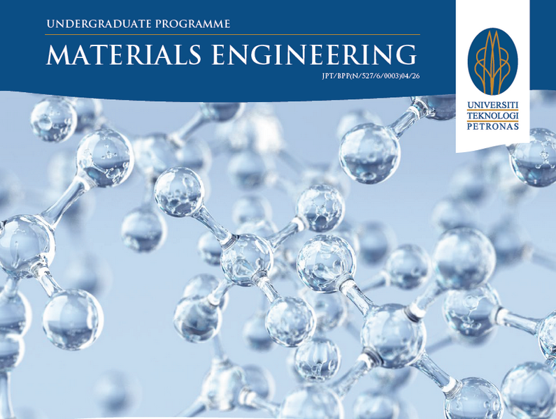
Materials engineering explores material behavior to enhance performance, driving innovation and new inventions. Materials engineers impact various aspects of life, such as designing lightweight, strong materials for high-performance Formula 1 cars.
Mechanical Engineering
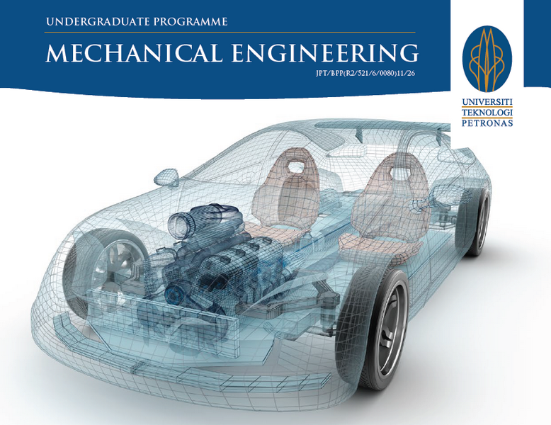
Mechanical engineering is a versatile discipline focused on the study and design of moving systems, including complex systems like the human body. Anything with moving parts or requiring manufacturing falls within the expertise of a mechanical engineer.
Petroleum Engineering
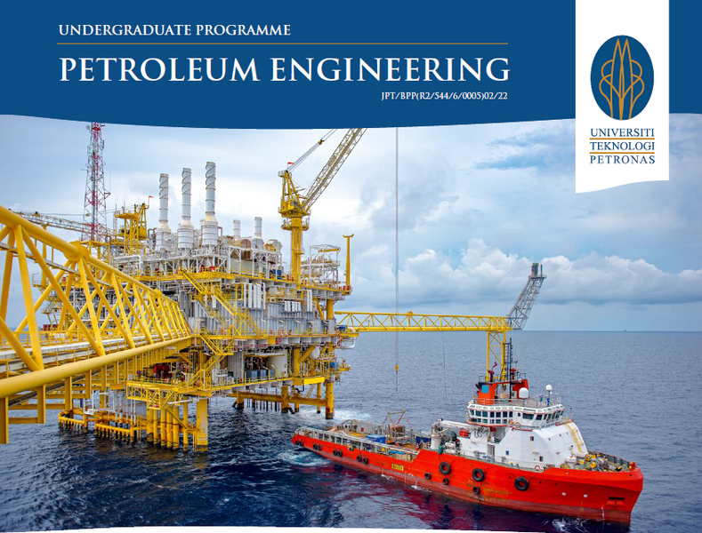
Petroleum engineering focuses on developing reservoirs and producing hydrocarbons, including crude oil, natural gas, and unconventional resources. It covers areas like formation evaluation, reservoir management, drilling, and production engineering.
Petroleum Geoscience
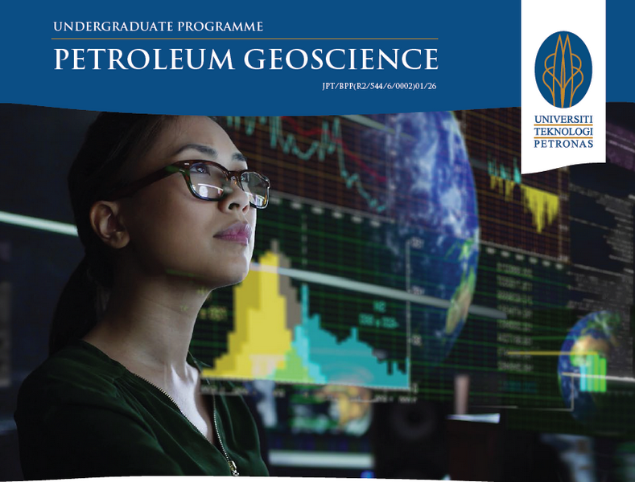
Petroleum geoscience, also called "petroleum detective," specializes in studying the petroleum system, from its origin and migration to exploration and exploitation of oil and gas.
Magister Faculty in Universiti Teknologi Petronas
"Magister Programme"
(M)Applied Computing
Applied Computing emphasizes the practical application of computing principles to solve real-world problems in various industries. It includes areas such as data analysis, artificial intelligence, and the development of customized software solutions for efficient operations.
(M)Asset Management
Asset Management focuses on optimizing the lifecycle of physical and financial assets to maximize value and performance. This includes strategies for maintenance, risk management, and sustainability in various industries.
(M)Corrosion Engineering
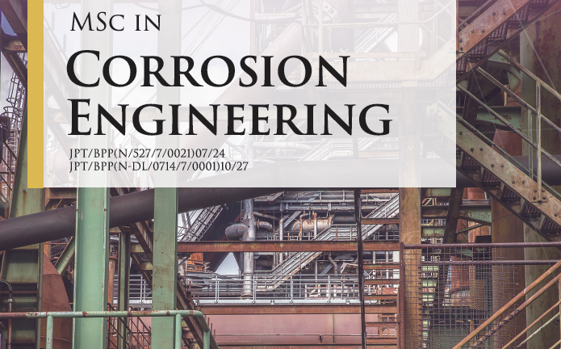
Corrosion Engineering addresses the prevention and control of material degradation in industrial systems. It involves studying corrosion mechanisms, protective coatings, and innovative materials to enhance safety and efficiency.
(M)Drilling Engineering
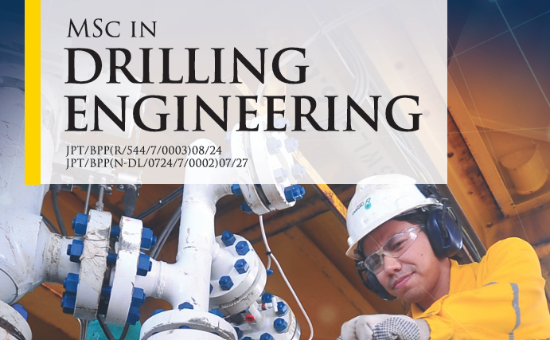
Drilling Engineering centers on designing and managing drilling operations for oil, gas, and geothermal energy. It emphasizes advanced techniques, safety protocols, and cost-efficient solutions for resource extraction.
(M)Electronic Systems
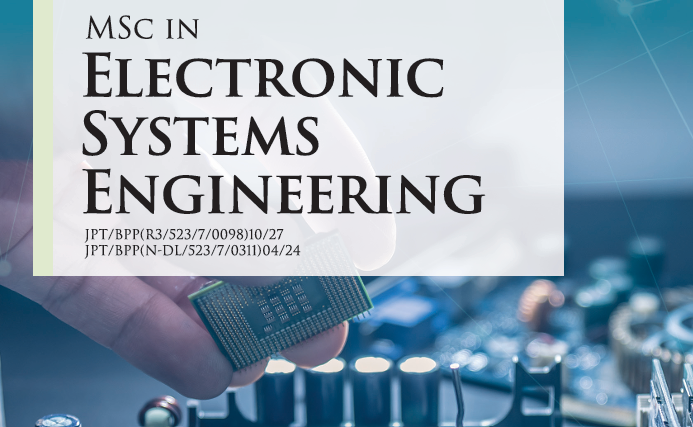
Electronic Systems explores the design, integration, and optimization of electronic devices and control systems. It covers areas such as embedded systems, IoT, and automation for industrial and consumer applications.
(M)Energy Management
Energy Management focuses on efficient and sustainable use of energy resources. It includes renewable energy technologies, energy audits, and strategies for reducing energy consumption in industries and communities.
(M)Industrial Environment E.
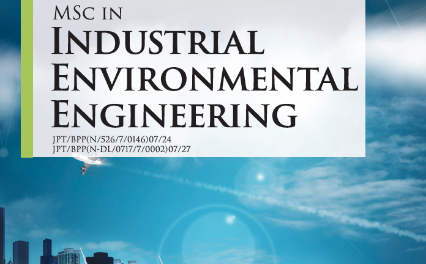
Industrial Environment Engineering combines engineering principles with environmental science to minimize industrial impact on the environment. Topics include waste treatment, pollution control, and sustainable industrial processes.
(M)Offshore Engineering
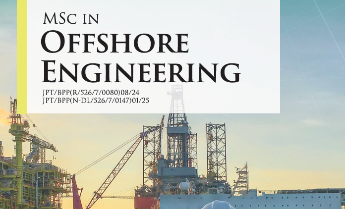
Offshore Engineering specializes in designing and managing structures and systems in marine environments. It encompasses offshore oil and gas platforms, wind farms, and subsea infrastructure with a focus on safety and sustainability.
(M)Petroleum Engineering
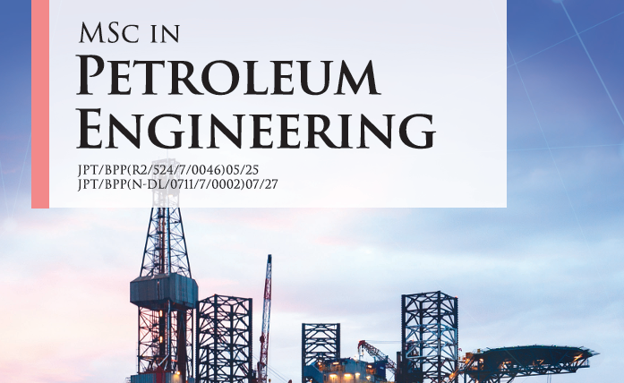
Petroleum Engineering focuses on the exploration, extraction, and production of oil and gas. It includes reservoir management, drilling techniques, and innovative approaches to enhance recovery while minimizing environmental impact.
(M)Petroleum Geoscience
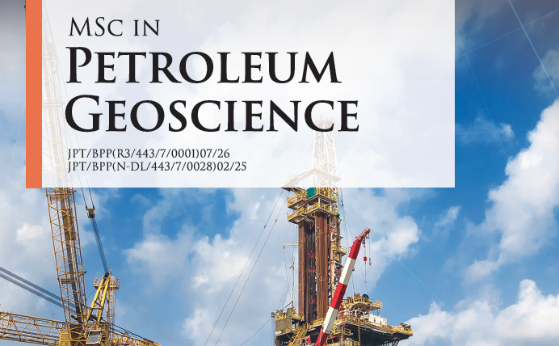
Petroleum Geoscience integrates geology, geophysics, and engineering to locate and evaluate subsurface oil and gas reservoirs. It emphasizes resource estimation, sustainable extraction, and advanced exploration technologies.
(M)Process Integration
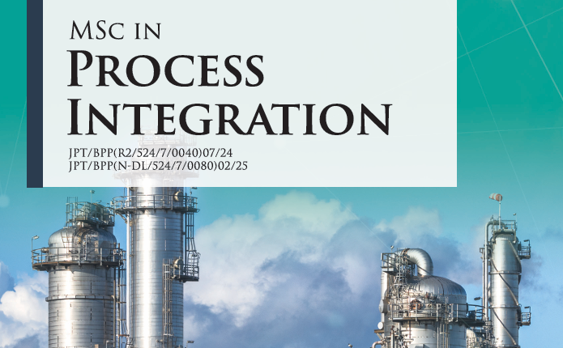
Process Integration aims to optimize industrial processes by minimizing energy consumption, waste, and costs. It involves system modeling, simulation, and innovative designs for efficient production.
(M)Process Safety
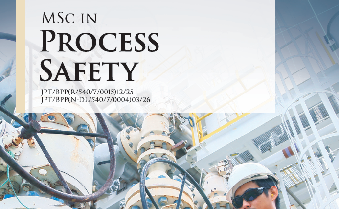
Process Safety focuses on managing risks and ensuring safety in industrial operations. It includes hazard analysis, accident prevention, and compliance with safety regulations to protect people and the environment.